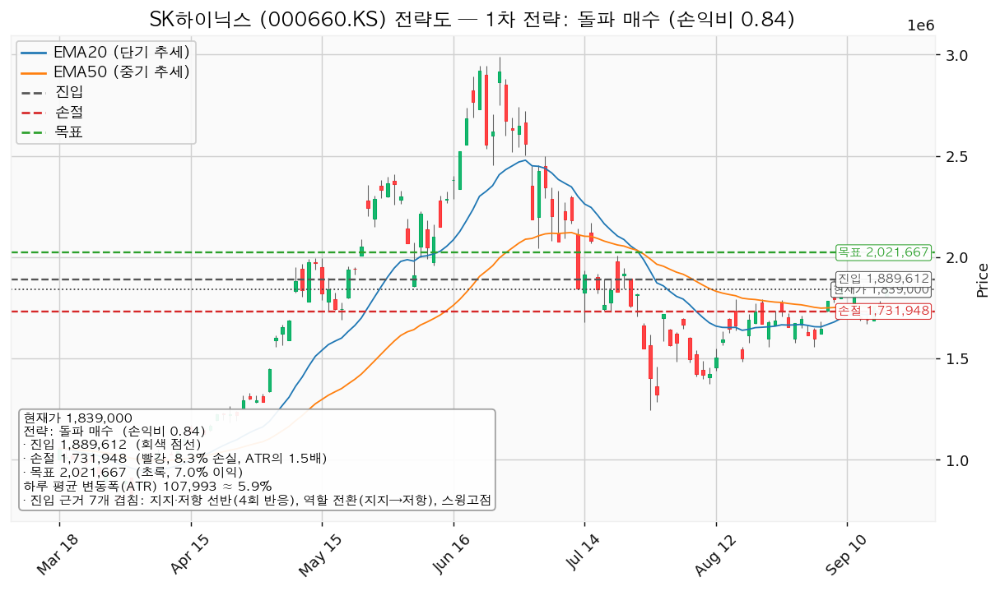
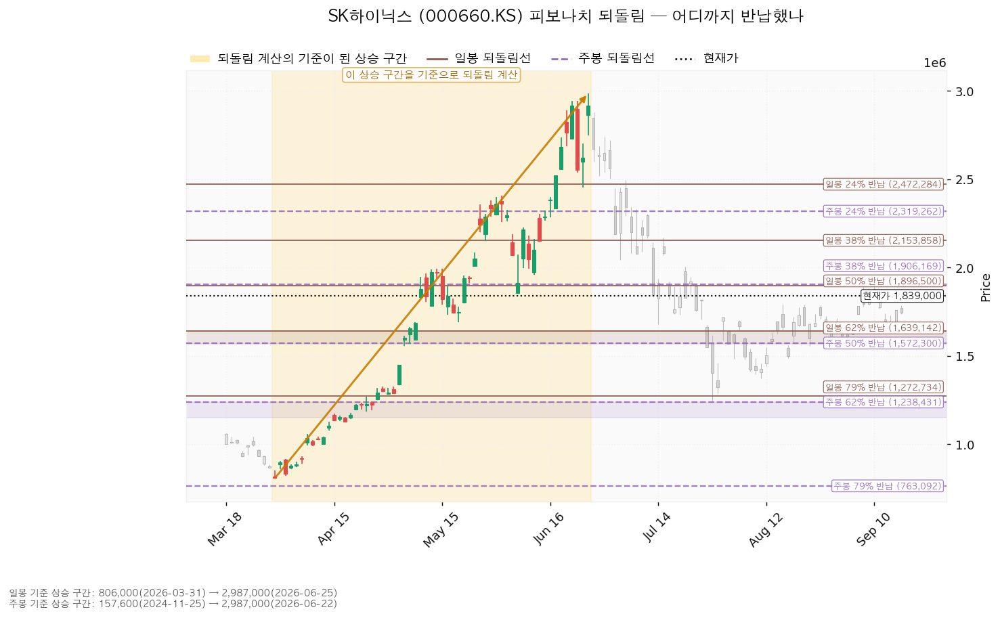
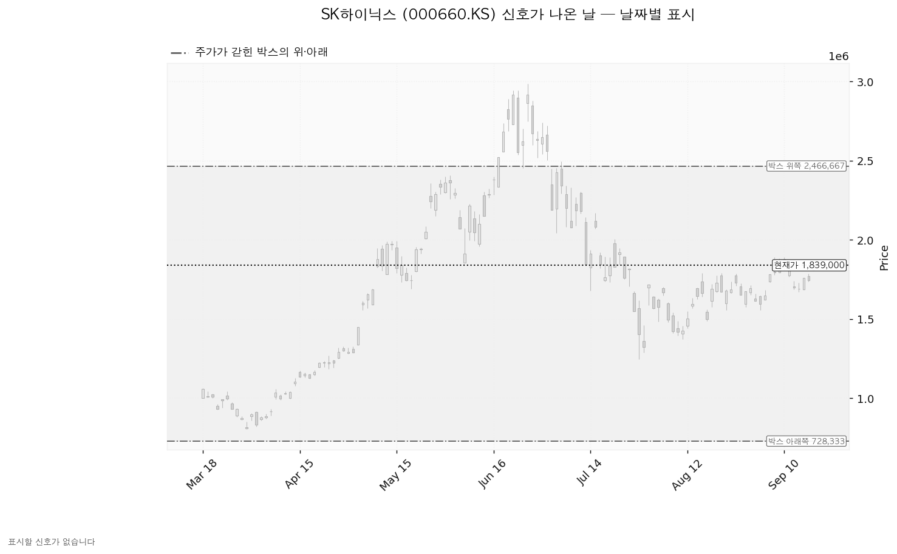
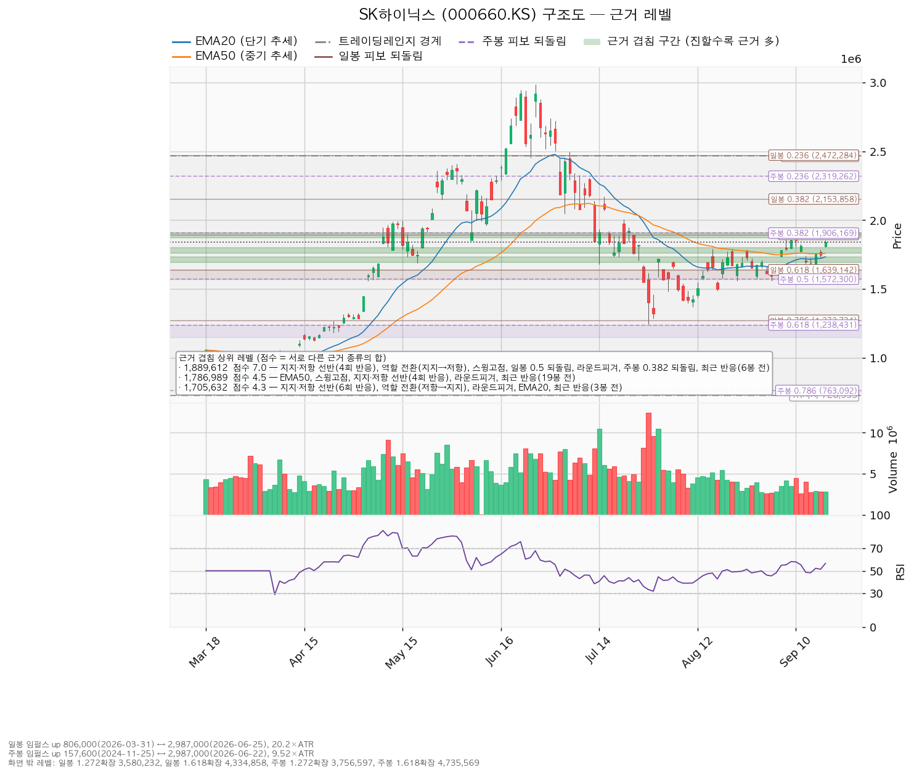

SK하이닉스(000660.KS)는 D램·HBM·낸드 등 메모리 반도체를 설계·생산하는 한국 기업이며, 실적이 메모리 가격 사이클에 크게 연동됩니다.
| 구분 | 가격 | 판정 방식 | 현재가 대비 | 상태 |
|---|---|---|---|---|
| 회복선(구조 기준선) | 1,889,612원 | 일봉 종가로 회복한 뒤 되돌림에서 지지되는지 — 넘어서면 새 셋업으로 다시 잡습니다 | +2.75% (0.47 ATR) | 회복 대기 |
| 집행 손절 | 해당 없음 | 이번 리포트는 진입을 내지 않으므로 걸어 둘 손절이 없습니다 | — | 진입 없음 |
| 관망 종료 기준 | 1,639,142원 | 일봉 종가가 아래로 마감 / 또는 2026-10-27 실적 | -10.87% (1.85 ATR) | 유지 중 |
| 확인선 | 2,021,667원 | 일봉 종가 돌파 후 되돌림에서 지지 확인 | +9.93% (1.69 ATR) | 미돌파 |
| 폐기선(구조) | 728,333원 | 이탈 → 3거래일 내 회복 실패 → 반등이 저항으로 확인 | -60.40% (10.28 ATR) | 유지 중 — 실무상 작동하지 않음 |
표의 'ATR'은 하루 평균 변동폭(현재 107,993원)을 뜻하며, 그 가격까지의 거리가 하루치 움직임의 몇 배인지를 나타냅니다.
폐기선까지의 거리는 하루 평균 변동폭의 10.28배로 3배를 크게 넘습니다. 가격 기준 무효화로 쓸 수 없으므로 미진입자가 실제로 볼 선은 관망 종료 기준 1,639,142원이고, 논지 쪽 무효화는 2026-10-27 실적 조건으로 따로 겁니다.
직전 리포트 이후 거래일은 2026-09-17·09-18 이틀입니다. 종가는 1,759,000원 → 1,745,000원 → 1,839,000원으로 이틀 합계 +4.55% 올랐습니다.
① 당시 트리거의 성적표 — 회복선은 충족됐고, 실제 집행 계획이던 되돌림 진입은 체결되지 않았습니다.
| 직전 리포트가 건 가격 | 이후 실제(9/17~9/18) | 판정 |
|---|---|---|
| 회복선 1,794,000원 (종가 회복) | 9/17 종가 1,745,000원 → 9/18 종가 1,839,000원 | 충족 (9/18) |
| 셋업 진입 1,717,122원 (장중 도달) | 이틀간 최저가 1,735,000원 (9/17) | 미충족 — 체결되지 않음 |
| 목표 1,889,534원 (장중 도달) | 이틀간 최고가 1,852,000원 (9/18) | 미도달 |
| 집행 손절 1,611,008원 (장중 도달) | 최저가 1,735,000원 | 미도달 |
| 관망 종료 1,639,142원 (종가 이탈) | 종가 1,839,000원 | 미충족 — 유지 중 |
| 2단계 경고선 1,604,586원 (종가 이탈) | 종가 1,839,000원 | 미충족 |
| 폐기선 728,333원 (종가 이탈) | 종가 1,839,000원 | 미충족 — 유지 중 |
직전 계획은 현재가보다 -2.38% 아래인 1,717,122원까지 눌릴 때 사는 것이었는데, 가격은 그 자리로 내려오지 않고 이틀 만에 +4.55% 올랐습니다. 눌림을 기다린 계획은 이 구간에서 아무것도 사지 못했습니다. 체결 장부에도 이 기간 매수 기록이 없으므로 계획과 집행이 어긋난 상태는 아닙니다 — 조건 자체가 충족되지 않았습니다. 장부에 남은 거래는 2026-07-01 매수 2주(평단 2,132,667원) 하나뿐이며 직전과 같습니다.
② 좌표의 이동 — 가격이 겹침 구간 하나를 위로 통과하면서 회복선·확인선이 한 단씩 올라갔습니다.
| 항목 | 2026-09-16 | 2026-09-18 | 왜 움직였나 |
|---|---|---|---|
| 현재가 | 1,759,000원 | 1,839,000원 (+4.55%) | 9/17 -0.80% 후 9/18 +5.39% |
| 하루 평균 변동폭(ATR) | 112,536원 | 107,993원 (-4.04%) | 주가의 6.40% → 5.87%로 축소 |
| EMA20 / EMA50 | 1,720,047 / 1,755,561원 | 1,733,527 / 1,758,946원 | 상승분 반영 |
| RSI(14) | 52.23 | 56.58 | 중립 구간 유지 |
| 박스 | 180봉 / 728,333~2,466,667원 | 같습니다 | 창도 경계도 그대로 |
| 회복선 | 1,794,000원 | 1,889,612원 (+5.33%) | 현재가가 1,758,946~1,800,000원 구간 위로 올라서면서, 위에서 처음 만나는 저항이 겹침 7.0점 구간으로 바뀜 |
| 확인선 | 1,889,534원 | 2,021,667원 (+6.99%) | 같은 이유로 한 단 위 3.0점 구간(2,000,000~2,045,000원)으로 이동 |
| 관망 종료 기준 | 1,639,142원 | 같습니다 | 일봉 62% 되돌림선이며 값이 바뀌지 않았습니다 |
| 폐기선 | 728,333원 | 같습니다 | 박스 아래쪽 그대로 |
| 대표 셋업 | 되돌림 매수 | 돌파 매수 | 구조 증명도 우선 선정 기준이 바뀐 국면을 반영 |
| 되돌림 셋업 진입 | 1,717,122원 | 1,786,989원 (+4.07%) | 진입 후보 구간이 EMA50과 합쳐지며 위로 이동 |
| 되돌림 셋업 손절 | 1,611,008원 | 1,667,502원 (+3.51%) | 밀어내는 기준 구간이 1,694,500~1,733,527원으로 올라옴 |
| 셋업 목표 | 1,889,534원 | 1,889,612원 | 겹침 7.0점 구간이 그 자리에 그대로 |
| 대표 손익비 | 1:1.62 (0.94 ATR) | 1:0.84 (1.46 ATR) | 아래 ③ 설명 |
| 판정 | 조건 대기 | 패스 | 두 셋업 모두 손익비 1 미만 |
| 신호 / 국면 후보 | 없음 / 미확정 | 없음 / 미확정 | 같습니다 |
③ 판단이 바뀌었습니다 — 직전에는 계획이 하나 있었고, 이번에는 없습니다. 이유는 목표가 움직이지 않은 채 진입만 올라왔기 때문입니다. 되돌림 매수를 직전과 나란히 놓으면 진입~목표 거리가 172,412원(1.53 ATR)에서 102,623원(0.95 ATR)으로 줄었고, 손절 폭은 106,114원(0.94 ATR)에서 119,487원(1.11 ATR)으로 늘었습니다. 위쪽 저항 1,889,612원은 겹침 7.0점으로 이 종목에서 가장 두꺼운 자리라 목표를 그 위로 옮길 근거가 없고, 그래서 손익비가 1.62에서 0.86으로 내려앉았습니다. 가격이 오른 것은 기존 2주에는 좋은 일이지만, 새로 잡을 자리로서는 먹을 폭이 사라진 상태입니다. 직전 리포트에 정정할 오류는 없습니다.
| 항목 | 값 |
|---|---|
| 보유 수량 | 2주 (최초 매수 2026-07-01) |
| 평단 | 2,132,667원 |
| 평가액 | 3,678,000원 |
| 평가손익 | -587,334원 (-13.77%) |
직전 리포트 시점(-747,334원 / -17.52%)보다 손실이 160,000원 줄었습니다. 평단 2,132,667원은 현재가에서 +15.97%(2.72 ATR) 위에 있어, 확인선 2,021,667원에 닿아도 이 2주는 -5.20% 손실 구간입니다.
| 가격 | 2주 기준 손익 | 평단 대비 |
|---|---|---|
| 확인선 2,021,667원 | -222,001원 | -5.20% |
| 회복선 1,889,612원 | -486,111원 | -11.40% |
| 현재가 1,839,000원 | -587,334원 | -13.77% |
| 항목 | 값 |
|---|---|
| 현재가 | 1,839,000원 (전일 대비 +5.39%) |
| 당일 고가 / 저가 | 1,852,000원 / 1,805,000원 |
| EMA20 (최근 20일 평균 흐름) | 1,733,527원 — 현재가는 +6.08% 위 (0.98 ATR) |
| EMA50 (최근 50일 평균 흐름) | 1,758,946원 — 현재가는 +4.55% 위 (0.74 ATR) |
| RSI(14) (0~100, 최근 상승·하락 강도) | 56.58 |
| ATR (하루 평균 변동폭) | 107,993원 = 주가의 5.87% |
| 국면 | 횡보 레인지(구조 유지 — 하단 사수 조건부) |
| 6월 고점 2,987,000원 대비 | -38.43% |
현재가는 두 이동평균을 모두 위로 지났고, EMA20 위로 하루 평균 변동폭의 0.98배까지 벌어졌습니다. 위쪽 저항 1,889,612원까지는 0.47배 거리뿐입니다. 아래로 벌어진 폭은 크고 위로 남은 폭은 좁은 위치이며, 두 셋업의 손익비가 모두 1 아래로 나온 것은 이 배치에서 나옵니다.
어느 구간을 보고 박스로 판정했는가. 조회된 일봉은 729개이며, 40·90·180봉 세 창을 모두 시험해 최근 180봉(약 아홉 달)을 골랐습니다. 이 창에서 종가가 박스 안에 머문 비율은 90.0%(40봉 90.0%, 90봉 86.7%)이고, 구간 초반 대비 후반 종가 이동분은 박스 폭의 56.3%입니다. 박스 폭은 하루 평균 변동폭의 16.1배로, 실행 기준으로 쓰기에는 지나치게 넓습니다. 그래서 이 리포트의 진입·손절·목표는 박스 경계가 아니라 근거 겹침 구간에서 고릅니다.
박스 안쪽에서 무슨 일이 있었나. 가격은 직전 170,400~621,000원 구간에서 위로 올라와 이 박스로 진입했습니다. 위에서 내려온 것이 아니라 아래에서 올라온 박스이므로 재축적과 분산이 같은 모양을 그리며, 안쪽에서 일어난 일로 갈라야 합니다.
세 번의 하단 테스트는 728,333원 부근, 즉 현재가에서 하루 평균 변동폭의 10배 넘게 떨어진 옛 구간의 사건입니다. 수 주 시계의 집행 근거로는 아래 `지지·저항` 표의 겹침 구간이 더 가깝습니다.
셋업은 둘 산출되었고, 집행하는 것은 없습니다.
| 셋업 | 진입 | 손절 | 목표 | 손익비 (손절 폭) | 구조 증명도 | 엣지의 종류 | 판정 |
|---|---|---|---|---|---|---|---|
| breakout_long (돌파 매수) — 대표 | 1,889,612원 | 1,731,948원 | 2,021,667원 | 1:0.84 (1.46 ATR) | 돌파 확인형 1.0 (최고 등급) | 모멘텀 — "저항을 돌파하면 그 방향이 이어진다" | 패스 (손익비 1 미만) |
| pullback_long (되돌림 매수) | 1,786,989원 | 1,667,502원 | 1,889,612원 | 1:0.86 (1.11 ATR) | 선취형(구조 미확인) 0.7 | 평균회귀 — "지지로 눌릴 때 산다" | 패스 (손익비 1 미만) |

대표 셋업 선정 사유는 *"손익비 0.84 × 구조 증명도(돌파 확인형) × 근거 겹침 7.0점으로 선정. 저항을 종가로 넘긴 뒤 진입한다 — 진입가는 불리하나 구조가 먼저 증명된다. 손익비만 보면 pullback_long(0.86)가 높지만, 구조 증명도가 낮아 대표 셋업으로 삼지 않는다"* 입니다. 손익비 1등(되돌림 0.86)과 대표 셋업이 다르며, 그 차이는 0.02인 반면 구조 증명도는 0.7과 1.0으로 벌어집니다. 두 셋업 모두 손익비가 1에 못 미치므로 어느 쪽도 집행하지 않습니다.
| 항목 | 돌파 매수 | 되돌림 매수 |
|---|---|---|
| 진입 근거 겹침 | 7.0점 / 1,872,500~1,906,169원 — 4회 반응 선반, 역할 전환(지지→저항), 스윙고점, 일봉 50% 되돌림, 라운드피겨 1,900,000원, 주봉 38% 되돌림, 6거래일 전 반응 | 4.5점 / 1,758,946~1,800,000원 — EMA50, 스윙고점 2개, 4회 반응 선반, 라운드피겨 1,800,000원, 19거래일 전 반응 |
| 손절 근거 | 겹침 4.5점 구간(1,758,946~1,800,000원) 바로 아래 | 겹침 4.3점 구간(1,694,500~1,733,527원) 바로 아래 |
| 목표 근거 겹침 | 3.0점 / 2,000,000~2,045,000원 — 라운드피겨, 6회 반응 선반, 스윙저점 | 7.0점 / 1,872,500~1,906,169원 |
| 손절 폭 | 157,664원 = 진입가의 -8.34% (1.46 ATR) | 119,487원 = 진입가의 -6.69% (1.11 ATR) |
| 진입~목표 거리 | 132,055원 = 1.22 ATR | 102,623원 = 0.95 ATR |
| 분할 청산 | 분할 없이 단일 목표 — 2,021,667원에서 100% 청산이며 중간 목표가 없어 본전 손절 이동 단계도 없습니다. 전 구간 손익비도 같은 0.84이고, 1차 익절 후의 하한 손익비는 산출되지 않습니다 | 분할 없이 단일 목표 — 1,889,612원에서 100% 청산. 전 구간 손익비 0.86, 하한 손익비 산출 없음 |
손절 폭과 손익비를 함께 봅니다. 두 셋업의 손절은 모두 아래쪽 겹침 구간 바로 밑에 놓인 구조적 손절 그 자체이며, 하루 변동폭 안쪽으로 조인 값이 아닙니다(1.46 ATR·1.11 ATR). 집행 손절과 구조적 손절이 같은 가격이라 구조적 손절 기준의 별도 손익비는 이번 산출에 따로 나오지 않았습니다. 손익비가 낮은 것은 손절을 넓게 잡아서가 아니라 목표까지의 폭이 좁아서입니다. 손절을 좁혀 손익비를 높이는 방식은 쓰지 않습니다.
엣지의 정합성. 돌파 매수는 모멘텀 전제인데 고정 목표 2,021,667원이 붙어 있습니다. 엔진이 이 조합에 붙인 설명은 *"진입 근거는 모멘텀이지만 집행은 레인지 규칙을 따른다 — 손절은 구조 아래, 목표 2,021,667원에서 전량 청산이며 트레일링은 걸지 않는다. 돌파 이후 구간은 이 포지션의 연장이 아니라 새 셋업으로 다시 잡는다"* 입니다. 되돌림 매수는 평균회귀 전제에 저항 전량 청산이 붙어 있어 두 요소가 서로 어긋나지 않습니다. 진입~목표가 각각 1.22 ATR·0.95 ATR로 2배에 못 미치므로 어느 쪽도 트레일링이나 단계별 청산을 권하지 않습니다(이 2배는 관행적 기준이지 정설은 아닙니다).
셋업 유형의 성격. 돌파 매수에 엔진이 붙인 설명은 *"자주 틀리고 소수가 크게 맞는 유형. 승률을 기대하는 셋업이 아니다"*, 되돌림 매수는 *"승률이 높고 이익 폭이 작은 유형"* 입니다. 둘 다 해당 유형의 일반적 성격을 말한 것이며 이 엔진에서 측정한 값이 아닙니다. 백테스트가 없으므로 승률에 숫자를 붙이지 않습니다.
비중. 두 셋업 모두 집행하지 않으므로 이번에 배정하는 비중은 0원입니다. 참고로 1회 매매에서 계좌의 1%를 잃는 한도로 계산하면 돌파 매수는 계좌의 12.0%, 되돌림 매수는 15.0%(한 종목 13% 한도를 적용하면 13%)가 나옵니다. 손익비가 1 미만인 계획에 이 비중을 싣지 않습니다.
도구 적합성. 하루 평균 변동폭이 주가의 5.87%로 8% 기준 아래이고, 두 손절 폭 모두 하루 평균 변동폭보다 넓습니다(1.46배·1.11배). 하루 흔들림에 논지와 무관하게 체결될 구조는 아닙니다. 시계는 수 주 기준입니다.
기준선은 회복선이자 돌파 매수의 진입가인 1,889,612원입니다(위 폐기선 728,333원과는 다른 가격이며 섞어 쓰지 않습니다). 이번에는 진입이 없으므로 아래 단계는 그 가격이 저항으로 굳는지를 보는 판정 틀로 씁니다.
| 단계 | 트리거 | 의미 | 행동 |
|---|---|---|---|
| ① 관찰 | 일봉 종가가 1,889,612원 아래로 마감 | 구조 이탈 시작 — 되돌아 올라오면 속임수 하락일 수 있어 아직 무효가 아닙니다 | 신규 진입만 중단. 진입한 경우 집행 손절은 그대로 둡니다 |
| ② 경고 | 이탈 후 3거래일 안에 1,889,612원을 종가로 회복하지 못함, 또는 그 전에 일봉 종가가 1,781,618원 아래로 마감(하루 평균 변동폭의 1배만큼 더 밀림) — 둘 중 먼저 오는 쪽 | 박스로 되돌아 들어갈 가능성이 우세해짐 | 잔여 비중 축소. 반등이 나오면 이 가격에서의 반응을 확인합니다 |
| ③ 무효 | 반등이 1,889,612원에서 막히고 그 아래로 되밀림(지지가 저항으로 전환) | 셋업 폐기 — 구조 해석이 틀린 것으로 확정 | 포지션 정리. 새 구조가 만들어질 때까지 관망 |
가격을 한 번 내준 것은 1단계일 뿐입니다. 집행 손절은 이 판정과 무관하게 별도로 작동하며(이번에는 진입이 없어 해당 없음), 장중 일시 이탈은 어느 단계에도 해당하지 않습니다.
| 시나리오 | 조건 | 구조 해석 | 행동 |
|---|---|---|---|
| 상승 전환 | 1,889,612원 종가 회복 후 지지 → 2,021,667원 종가 돌파 | 속임수 하락 확인 → 강세 신호 → 되돌림 지지 → 상승 국면 | 이번 리포트는 진입을 내지 않았으므로 1,889,612원 종가 회복과 되돌림 지지가 확인되면 새 셋업으로 다시 산출해 그때 손익비를 봅니다. 회복선을 종가로 넘었다는 이유만으로 그 자리에서 사지 않습니다 — 지금 그 가격에 사는 계획의 손익비가 0.84입니다. 기존 2주는 보유 유지 |
| 횡보 지속 | 728,333원을 지키며 2,021,667원 아래에서 박스 유지 | 구조는 유지 — 매물 소화에 시간이 필요한 국면이며 부정적 신호가 아닙니다 | 관망합니다. 박스 안쪽 세 가지를 추적합니다: 지지 테스트마다 매도 거래량이 줄어드는지(현재 증가), 저점이 절상되는지(현재 절상), 상승할 때 거래량이 실리는지(현재 상승봉 대 하락봉 거래량비 0.94). 이 셋 중 첫째와 셋째가 돌아서면 같은 구조에서도 목표를 위로 옮길 근거가 생깁니다. 기존 2주는 보유 유지 |
| 시나리오 폐기 | 728,333원 이탈 후 3거래일 내 회복 실패(또는 그 전에 종가 620,340원 아래 마감) + 반등에서 저항으로 확인 | 매집이 아니라 재분산 — 추가 저점 갱신 가능성을 엽니다 | 기존 2주를 포함해 포지션 정리 후, 새 매도 절정과 새 박스가 만들어질 때까지 관망. 다만 이 조건은 현재가에서 하루 평균 변동폭의 10.28배 아래라 실제로는 아래 `논지 무효화`가 먼저 작동합니다 |
일봉 기준 상승 구간은 2026-03-31 806,000원 → 2026-06-25 2,987,000원(하루 평균 변동폭의 20.2배)이며, 현재가 1,839,000원은 그 상승분의 52.6%를 반납한 자리입니다. 50% 되돌림 1,896,500원 바로 아래입니다. 주봉 기준 상승 구간은 2024-11-25 157,600원 → 2026-06-22 2,987,000원이며, 현재가는 그 상승분의 40.6% 반납 지점으로 38% 되돌림 1,906,169원 바로 아래입니다. 일봉·주봉 되돌림 모두 계산할 수 있는 상승 구간이 있어 이번 리포트에는 둘 다 실었습니다.
| 되돌림선 | 가격 | 현재가 대비 | 이번 리포트에서의 쓰임 |
|---|---|---|---|
| 일봉 38% | 2,153,858원 | +17.12% | 없음 |
| 주봉 38% | 1,906,169원 | +3.65% | 회복선 겹침 구간의 위쪽 경계 |
| 일봉 50% | 1,896,500원 | +3.13% | 회복선 구간의 구성 근거 |
| 일봉 62% | 1,639,142원 | -10.87% | 관망 종료 기준 |
| 주봉 50% | 1,572,300원 | -14.50% | 아래쪽 지지 구간(3.8점)의 구성 근거 |
| 주봉 62% | 1,238,431원 | -32.66% | 아래쪽 지지 구간(4.2점)의 구성 근거 |
현재가는 일봉 50%와 주봉 38% 되돌림선 바로 아래에 붙어 있습니다. 두 선이 1,896,500원과 1,906,169원으로 1만원 남짓 차이로 겹쳐 있고, 여기에 4회 반응 선반과 라운드피겨 1,900,000원이 더해져 겹침 7.0점 구간이 만들어집니다. 이 구간이 이 종목에서 가장 두꺼운 저항이며, 이번 두 셋업의 목표와 진입이 모두 이 구간에 걸려 손익비가 눌린 원인입니다.

이번 산출에서 Wyckoff 신호가 난 날은 없습니다. 속임수 하락(spring)·속임수 상승(upthrust)·강세 신호(SOS)·약세 신호(SOW) 어느 것도 잡히지 않았고, 국면 후보도 미확정입니다. 직전 리포트에서도 신호는 없었으므로 이 항목은 직전과 같습니다. 아래 차트에 표시된 날이 없는 것은 조회 실패가 아니라 해당 기간에 신호일이 없었기 때문입니다. 9월 18일 +5.39% 상승도 강세 신호 조건을 채우지 못했습니다 — 겹침 7.0점 저항 1,889,612원을 넘지 못했고(당일 고가 1,852,000원), 상승봉 대 하락봉 거래량비도 0.94로 1을 밑돕니다.

점수는 서로 다른 근거 종류의 가중치 합이며, 같은 종류가 여러 개 겹쳐도 한 번만 더해집니다.
| 가격대 | 대표값 | 점수 | 근거 | 현재가 대비 |
|---|---|---|---|---|
| 2,466,667~2,472,284원 | 2,469,475원 | 2.2 | 박스 위쪽, 일봉 24% 되돌림 | +34.28% |
| 2,100,000~2,153,858원 | 2,126,929원 | 1.6 | 라운드피겨, 일봉 38% 되돌림 | +15.66% |
| 2,000,000~2,045,000원 | 2,021,667원 | 3.0 | 라운드피겨, 6회 반응 선반, 스윙저점 | +9.93% |
| 1,872,500~1,906,169원 | 1,889,612원 | 7.0 | 4회 반응 선반, 역할 전환(지지→저항), 스윙고점, 일봉 50% 되돌림, 라운드피겨, 주봉 38% 되돌림, 6봉 전 반응 | +2.75% |
| 1,758,946~1,800,000원 | 1,786,989원 | 4.5 | EMA50, 스윙고점 2개, 4회 반응 선반, 라운드피겨, 19봉 전 반응 | -2.83% |
| 1,694,500~1,733,527원 | 1,705,632원 | 4.3 | 6회 반응 선반, 역할 전환(저항→지지), 라운드피겨, EMA20, 3봉 전 반응 | -7.25% |
| 1,639,142~1,678,000원 | 1,658,571원 | 2.7 | 일봉 62% 되돌림, 스윙저점, 3봉 전 반응 | -9.81% |
| 1,558,000~1,600,000원 | 1,576,767원 | 3.8 | 스윙저점, 주봉 50% 되돌림, 라운드피겨, 11봉 전 반응 | -14.26% |
| 1,373,000원 | 1,373,000원 | 1.7 | 스윙저점, 27봉 전 반응 | -25.34% |
| 1,238,431~1,272,734원 | 1,252,388원 | 4.2 | 주봉 62% 되돌림, 스윙저점, 일봉 79% 되돌림, 36봉 전 반응 | -31.90% |
| 728,333~763,092원 | 745,712원 | 2.7 | 박스 아래쪽, 주봉 79% 되돌림 | -59.45% |
현재가 위로 가장 가까운 자리는 1,889,612원(7.0점, +2.75%)이고 아래는 1,786,989원(4.5점, -2.83%)입니다. 위쪽 자리가 겹침 7.0점으로 이 표에서 가장 두껍고 현재가에서 0.47 ATR밖에 떨어져 있지 않은 반면, 그 위 다음 자리인 2,021,667원까지는 1.22 ATR을 더 가야 합니다. 저항이 두껍고 그 위 공간이 좁은 배치이며, 관망 종료 기준 1,639,142원 아래에서 다음으로 받칠 자리는 1,558,000~1,600,000원(3.8점)입니다.

| 항목 | 값 |
|---|---|
| 애널리스트 수 / 투자의견 | 37명 / 적극 매수 |
| 목표주가 평균 | 3,184,026원 (+73.14%) |
| 목표주가 최저 | 1,535,000원 (-16.53%) |
| 목표주가 최고 | 5,300,000원 (+188.20%) |
| 선행 PER (주가 ÷ 앞으로의 주당순이익) | 3.92배 (내년 추정 EPS 469,406원 기준) |
| 후행 PER (주가 ÷ 지나간 주당순이익) | 조회되지 않았습니다 |
| 올해 추정 EPS (주당순이익) | 351,751원 (성장률 +482.6%) |
| 내년 추정 EPS | 469,406원 (성장률 +33.5%) |
| 90일간 추정치 변화 | 올해 +15.1%, 내년 +13.5% (둘 다 상향) |
| 다음 실적 발표 | 2026-10-27 |
(a) 배수. 후행 배수는 이번 조회에 담기지 않았으므로 후행 기준으로 비싸다·싸다를 판정하지 않습니다. 선행 배수는 3.92배(직전 3.73배)이며, 올해 이익이 +482.6%, 내년이 +33.5% 늘어나는 것을 전제로 한 값입니다. 올해 추정 EPS 기준으로는 5.23배입니다.
(b) 목표주가 분포. 현재가 1,839,000원은 애널리스트 37명의 최저 목표 1,535,000원보다 위에 있으며, 최저~최고 구간(1,535,000~5,300,000원)에서 아래쪽 8.1% 지점입니다. 평균 목표까지는 +73.14%이지만 분포의 폭이 3.5배에 이를 만큼 넓어 평균 하나로 판단할 근거가 되지 않습니다. 평균 목표는 직전 3,202,944원에서 3,184,026원으로 소폭 내려왔습니다.
(c) 하락의 성격. 6월 25일 고점 2,987,000원에서 -38.43% 내려온 자리이며, 그동안 컨센서스 EPS는 90일간 올해분 +15.1%, 내년분 +13.5% 상향됐습니다(직전 리포트의 +14.3%·+14.0%에서 더 올라왔습니다). 추정치가 오르는데 가격이 내렸으므로 이 하락은 배수 수축이며, 사업 악화로 적을 근거는 이 자료에 없습니다.
(d) 현금흐름. 2025-12-31 결산 기준 영업현금흐름 53.4조원 흑자, 잉여현금흐름 24.8조원 흑자이며 적자가 아닙니다. 설비투자는 16.7조원에서 28.6조원으로 +71.5% 늘었고 그만큼 잉여현금흐름이 줄었습니다. 영업 단계에서 현금이 나가는 적자와는 성격이 다릅니다. 이 투자가 이익으로 돌아오는지를 다음 실적의 확인 항목으로 겁니다.
(e) 상승 여력의 분해. 평균 목표 3,184,026원은 내년 추정 EPS 469,406원에 6.78배를 매긴 값이고, 현재 배수는 올해 EPS 기준 5.23배입니다. 그 5.23배를 내년 EPS에 그대로 적용하면 2,454,113원(+33.45%)이 되며, 이 부분이 이익 증가로 설명되는 몫입니다. 평균 목표까지의 나머지 상승분은 배수가 5.23배에서 6.78배로 더 매겨져야 채워집니다.
주도주 여부 — 아닙니다. 한국 섹터 강도에서 반도체 ETF(091160.KS)의 20일 초과수익은 +3.29%로 11개 섹터 중 5위이며, 직전 리포트 시점의 +4.27%·2위에서 내려왔습니다. 1일 기준 -0.12%, 5일 기준 +1.78% 입니다. 같은 기간 1위 건설은 20일 +17.46%, 2위 AI전력기기는 +13.12% 로 반도체와 격차가 벌어져 있습니다. 개별 종목은 이틀간 +4.55% 올랐지만 섹터 차원의 주도력은 오히려 후퇴했습니다. 컨센서스는 12개월 시계이고 이번 셋업은 수 주 시계이므로 두 결론이 갈려도 모순이 아닙니다. 답은 진입·손절·목표로 내며, 이번 판정은 패스입니다.
| 날짜 | 이벤트 | 볼 수치 |
|---|---|---|
| 2026-10-27 | 3분기 실적 발표 | 올해 추정 EPS 351,751원 경로 유지 여부, 내년 추정 469,406원의 방향, 영업현금흐름(직전 결산 53.4조원)과 설비투자(28.6조원, +71.5%)의 회수 속도 |
이번 조회에서 날짜가 확정된 이벤트는 실적일 하나뿐이며, 다른 일정은 나오지 않았습니다.
폐기선 728,333원은 현재가에서 하루 평균 변동폭의 10.28배 아래로 3배를 크게 넘습니다. 가격 기준 무효화로는 작동하지 않으므로, 판단을 접는 조건을 실적 수치로 따로 겁니다 — 2026-10-27 실적에서 다음 중 하나가 확인되면 "추정치는 오르는데 가격만 빠진 배수 수축"이라는 해석을 접습니다.
가격 쪽에서 실제로 볼 선은 관망 종료 기준 1,639,142원(일봉 종가)입니다. 그 아래로 마감하면 이 종목의 관망을 끝냅니다.